Создание игр в Roblox Studio
Программирование на Lua. События
Что такое события?
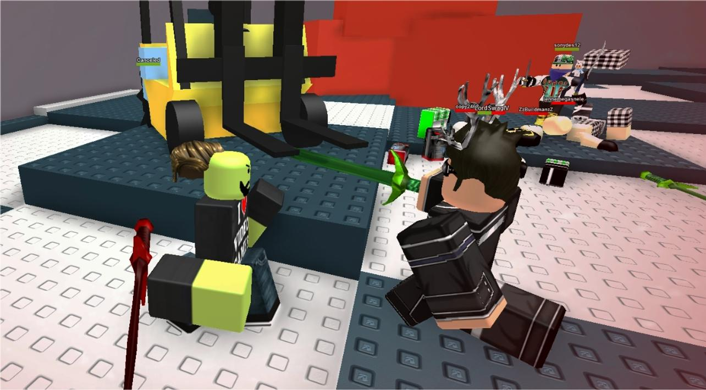События - это одна из самых важных частей в организации игрового процесса. И это заключительная фундаментальная тема в блоке программирования этого курса. Фактически, всё, что мы проходили до этого, было необходимо, чтобы понять, как именно работают события.
Событие - это любое действие, которое происходит в игре и меняет её состояние. Именно благодаря событиям игра может выполнять не только заданные заранее действия, а также взаимодействовать с игроком и реагировать на его действия в реальном времени.
Событием может быть любое действие внутри игры. Когда игрок перемещается в игре, это считается событием. Дотрагиваясь до какого-то объекта, он запускает другое событие. Ударяя противника оружием, запускается третье событие. И так практически со всеми действиями, связанными с командами игрока.
При помощи событий мы можем объяснить компьютеру, что он должен самостоятельно запустить какие-то действия в правильные моменты времени. Это очень похоже на принцип функций - написанные команды не выполняются сразу после запуска игры, а ждут, пока программа не найдет вызов этих действий.
Действительно, это схожий механизм, но с одним очень важным отличием: в случае с функциями мы пишем действия, после чего самостоятельно пишем условия для их выполнения, размещаем это в программном коде и записываем вызов функции. Написать, например, условие для касания двух объектов будет достаточно сложно и громоздко.
Вместо этого мы можем использовать обработчики событий - специальные части кода, которые самостоятельно будут следить, не произошли ли какие то действия в игре. Как только событие произойдёт, обработчик события самостоятельно вызовет прикреплённую к нему функцию.
При помощи обработчиков событий мы можем создавать намного более самостоятельный программный код, который будет принимать решения и выполнять действия в зависимости от действий игрока и множества разных других факторов.
B Roblox Studio уже есть предварительно созданные события по умолчанию, которые мы и будем использовать.
Работа с событиями
Задание 1 - Открытие двери с помощью события
Первая задача рассчитана на ознакомление с тем, как создавать и использовать события - в ней необходимо написать событие, открывающее дверь.
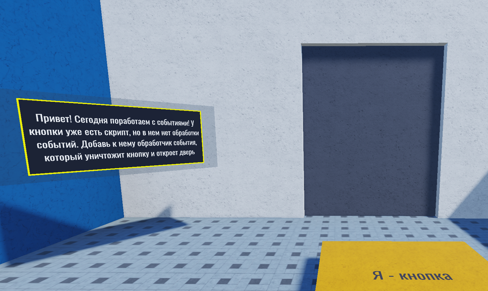Найдём кнопку (OpenButton) и откроем её дочерний скрипт TouchScript, в котором уже написана функция открытия двери.
Наша задача - написать здесь обработчик события, который запустит эту функцию самостоятельно, как только игрок наступит на кнопку.

Сначала создадим переменную со ссылкой на кнопку - родительский объект скрипта:
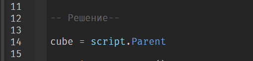Каждый обработчик события следит, не произошло ли в игре действие, которое он отслеживает. Если он «заметил» нужное событие, он автоматически запускает функцию, которая к нему привязана.
Напишем эту функцию, она должна просто вызвать функцию Open Door():
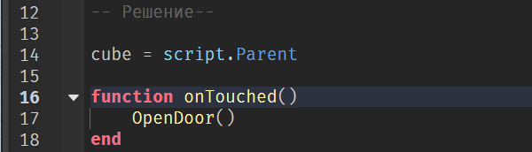Событие, которое мы рассмотрим, называется Touched, это событие отслеживает касания для выбранного объекта. Оно автоматически запускает ответные действия, когда объекта касается любой другой (есть несколько исключений) объект в игре.
Название ответной функции может быть любым, но обычно ее называют по имени события, к которому она привязана, добавляя слово «on» в начале:
Touched onTouched
Changed onChanged
ChildAdded onChildAdded
Далее необходимо вызвать onTouched, однако мы не можем сделать это просто в выполняемом коде, как в прошлом занятии, - дверь сразу откроется. Нужно сделать это только в тот момент, когда игрок дотронется до кнопки.
Для этого создадим обработчик событий, и будем ждать касания:
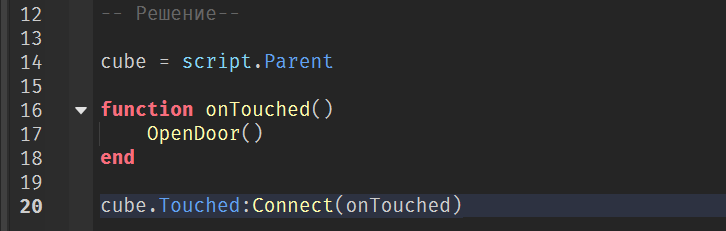Обратим внимание, что после названия события Touched стоит функция с двоеточием. Из прошлого занятия мы знаем, что это метод - особая функция, работающая только с определёнными типами объектов.
Метод Соnnect позволяет связать обработчик события и функцию, которая должна им автоматически запускаться.
Теперь при касании кнопки игроком, обработчик обнаружит отслеживаемое событие и автоматически запустит привязанную к нему функцию onTouched.
Запустим игру и проверим результат:
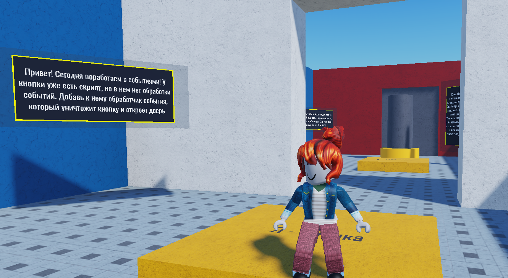Готово!
Задача 2 - Функция debounce()
В этом задании нам необходимо научиться избегать ложных срабатываний событий. В середине комнаты вы можете найти кнопку и серый цилиндр. При касании кнопки цилиндр перекрашивается в случайный цвет.
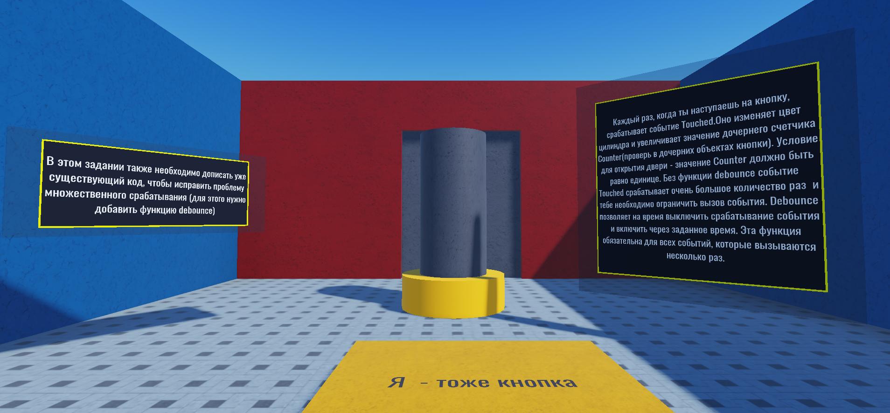Попробуем запустить игру и наступить на кнопку. Мы увидим, что, несмотря на то, что мы наступили на неё один раз, цилиндр изменил свой цвет несколько раз подряд. Это связано с ложными срабатываниями события.
К сожалению, проблема с ложными срабатываниями события существует в Roblox с самого его начала, и она до сих пор не исправлена, так как связана со структурой языка LUA и работой ядра Roblox.
Дело в том, что персонаж, за которого мы играем (аватар) на самом деле состоит из множества различных деталей. Каждый раз, когда мы задеваем кнопку, она одновременно регистрирует касания всех деталей, присутствующих в аватаре.
Поэтому вместо того, чтобы сработать единожды, она срабатывает несколько раз в ответ на одно касание. Чтобы бороться с такими ложными срабатываниями, разработчики придумали функцию, которая называется debounce («дебаунс»).
Проблема ложных срабатываний заключается в том, что Roblox слишком быстро реагирует на события, и самое очевидное и элегантное из найденных решений - добавить небольшую задержку между срабатываниями. Именно это и делает функция debounce().
Она на некоторое время выключает обработчик события после срабатывания. Внутри игры эта пауза незаметна, но задержка даже в половину секунды в большинстве случаев позволяет избежать любых ложных срабатываний.
Вернёмся к задаче. Найдём объект ColorButton и раскроем его дочерние объекты. В них можно найти скрипт ButtonTouchScript и глобальную переменную Counter. В эту переменную записывается все срабатывания обработчика событий.
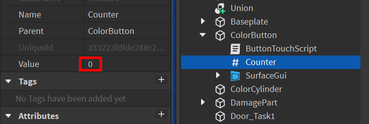Чтобы пройти эту комнату, необходимо написать функцию debounce() и сделать так, чтобы обработчик сработал один раз, избежав ложных срабатываний. В этом случае глобальный скрипт автоматически откроет дверь, и мы сможем пройти к следующей задаче.
Откроем скрипт ButtonTouchScript. В нём уже есть функция onTouch и обработчик события, а также все необходимые нам переменные.
Отдельно записана переменная active, значение которой равно true. Это - логическая переменная:
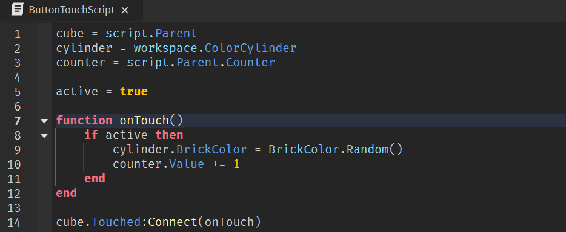Обратим внимание на функцию onTouch: в ней записано следующее:
если переменная active верна, цилиндр меняет свой цвет на случайный, а значение глобальной переменной counter увеличивается на единицу.
Переменная active существует здесь именно для того, чтобы включать и выключать обработчик события, а точнее его реакцию. Обработчик события все равно будет регистрировать ложные срабатывания, однако при правильно написанной функции debounce ответная реакция будет отключаться на некоторое время, и обработчик события будет срабатывать «вхолостую».
Напишем функцию debounce. Она должна отключать переменную active, ждать заданное количество времени и включать ее обратно. Так и напишем:
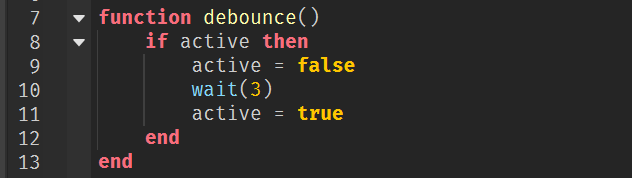Добавим debounce в функцию onTouch после увеличения счётчика срабатываний:
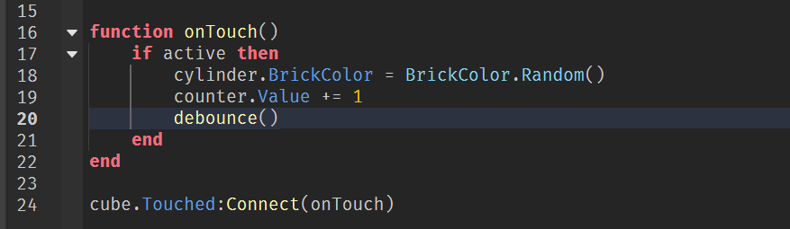Теперь, как только игрок наступит на платформу, произойдут следующие события:
-
Обработчик события увидит, что произошло касание и запустит функцию onTouch.
-
onTouch проверит, активна ли она.
- Если переменная active выключена (равна false), функция просто завершится, не сделав ничего.
- Если active == true, она поменяет цвет цилиндра, увеличит счётчик срабатываний на единицу и запустить debounce.
-
debounce
- Отключит реакцию на все срабатывания события (поменяет значение active на false).
- Подождёт 3 секунды, чтобы все ложные срабатывания точно произошли.
- Включит реакцию обработчика обратно (поменяет значение active на true).
Любые ложные срабатывания, произошедшие в эти 3 секунды, будут видеть, что переменная active выключена (равна false). Это значит, что все действия, записанные в функции onTouch, не будут выполняться - они могут выполниться только при включенной переменной active.
Запустим игру и проверим работу скрипта. Теперь цилиндр меняет цвет всего один раз, а через некоторое время открывается проход в следующую комнату.
Интерактивные объекты
Понятие интерактивных объектов
В любых играх мы постоянно сталкиваемся с объектами, которые взаимодействуют с игроком. Это могут быть двери, объекты, наносящие урон, лечилки, сундуки и так далее. Все эти объекты зависят от игрока - ни один из них не выполнит присущие ему действия без команды от игрока. Это может быть клик мышкой, столкновение, заход в определённую область и прочие действия, совершаемые игроком.
Такие объекты называются интерактивными, от английского interact - взаимодействовать. Это самая обширная область применения событий в играх.
Задача 3 - Программирование интерактивных объектов
В этом задании у вас есть три интерактивных объекта: лечилка, блок, наносящий урон, и джампад - блок, увеличивающий высоту прыжка. Именно при помощи последнего вам нужно будет перепрыгнуть через стену - в этом занятии задание дверь не открывается автоматически.
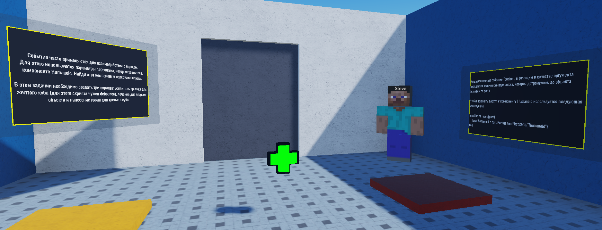Все эти объекты работают по-разному, но их объединяет одна общая черта - каждый из них взаимодействует с какими-то параметрами персонажа.
Работа с компонентом Humanoid. Лечение персонажа
В этом моменте необходимо вспомнить, как именно устроен аватар, для этого в правом углу можно найти персонажа - Стива. Он устроен как любой другой играбельный персонаж.
Раскроем группу Стив и найдём компонент Humanoid. Именно в нём находятся все параметры, отвечающие за здоровье, скорость перемещения, высоту прыжка и так далее. Все интерактивные объекты при взаимодействии с персонажем на самом деле просто изменяют параметры этого компонента.
Одна из главных целей этой задачи - научиться обращаться к объекту, который вызвал событие. Это делается при помощи скрытого параметра функции, привязанной к обработчику события.
В первую очередь напишем скрипт для лечилки. Как и в предыдущих обработчиках событий, введём нужные нам переменные, напишем функцию onTouch и обработчик события, к которому эта функция будет привязана.
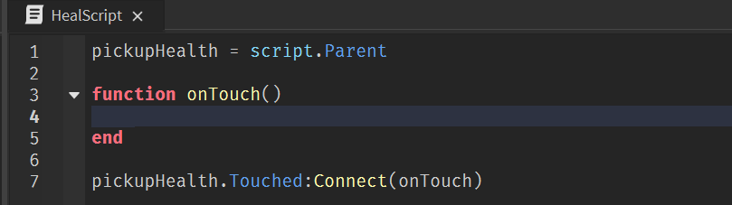Чтобы получить доступ к объекту, вызвавшему событие, добавим параметр, в который будет записана деталь, задевшая нашу лечилку. Назовём этот параметр part.
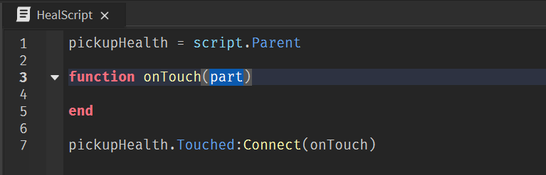Отлично. Теперь благодаря переменной part, мы можем проверить, что именно вызвало событие - случайный объект, пролетавший мимо, или всё-таки персонаж.
Как мы знаем, живого персонажа от неживого объекта отличает наличие компонента Humanoid. Введём дополнительную переменную внутри функции, которую также назовём humanoid. В эту переменную запишем компонент Humanoid, принадлежащий объекту, задевшему лечилку.
Есть два способа это сделать. Более простой из них будет использоваться в этом примере - обращение к родительскому объекту, а после прямое обращение к компоненту Humanoid. В этом случае мы можем получить ошибку, если функция не найдёт компонент. Лучше использовать метод FindFirstChild(), который мы рассмотрим чуть позже.
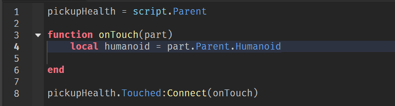Теперь, когда у нас есть доступ к компоненту Humanoid, мы можем выполнить действия. Обратимся к параметру Health и увеличим его на 15 юнитов:
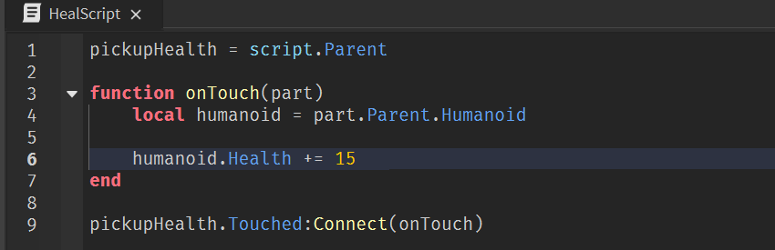Этот подход череват ошибками и ложной реакцией на соприкосновение с неживыми объектами. Чтобы убедиться, что событие вызвал гуманоидный объект, перепишем обращение к компоненту Humanoid.
FindFirstChild(), который, в случае успешного нахождения компонента, запишет его в одноименную переменную. Если же он не найдёт компонент, в переменную запишется значение nil (пустота).
Таким образом, если в переменной humanoid будет записано значение nil, это автоматически будет значить, что блока коснулся неживой объект, которому мы не можем нанести урон, а значит реакция на это события не должна происходить.
Запишем это условие при помощи if и поместим действия внутрь нашего кода. Также добавим уничтожение лечилки:
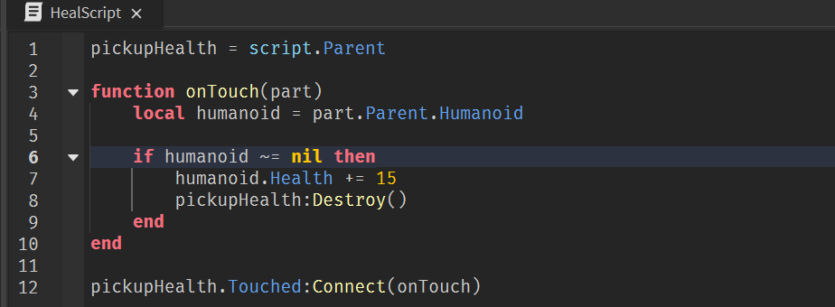Работа с компонентом Humanoid. Трамплин
Чтобы написать скрипт трамплина, нужно использовать функцию debounce. Этот объект может использоваться несколько раз подряд, в отличие от предыдущих, поэтому, чтобы ограничить его эффект по времени, лучше добавить небольшую паузу между его срабатываниями.
Введём нужные нам переменные. Для экономии времени, функцию debounce можно скопировать из предыдущей задачи.
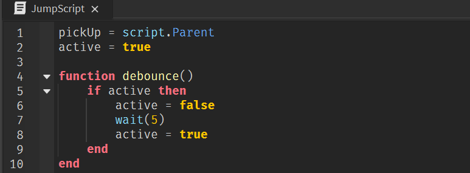Теперь добавим функцию onTouch и обработчик события с прикреплённой функцией. Добавим параметр part, в который запишется деталь, вызвавшая событие, и условие для работы дебаунса:
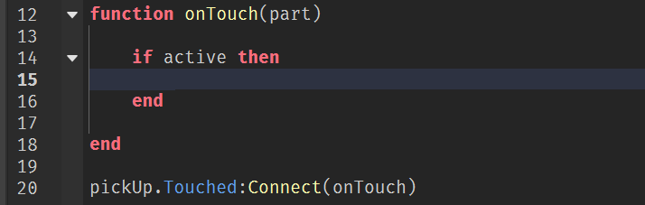После этого необходимо проверить, кто именно вызвал событие. Если это был Humanoid, скрипт должен увеличить высоту его прыжка. Добавим переменную humanoid и найдём компонент Humanoid при помощи метода FindFirstChild():
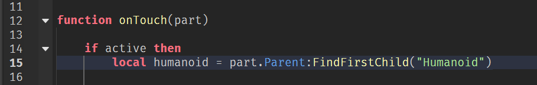Теперь добавим условие для фильтрации живых объектов, необходимые нам действия (увеличение высоты прыжка, паузу, возвращение прыжка к значению по умолчанию), дебаунс и завершим скрипт:
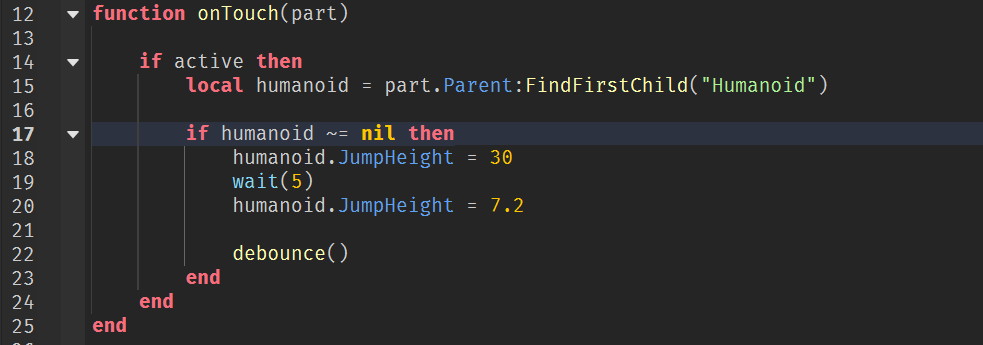Домашкаа 😁
Для домашнего задания в этом занятии подготовлена 4-ая задача.
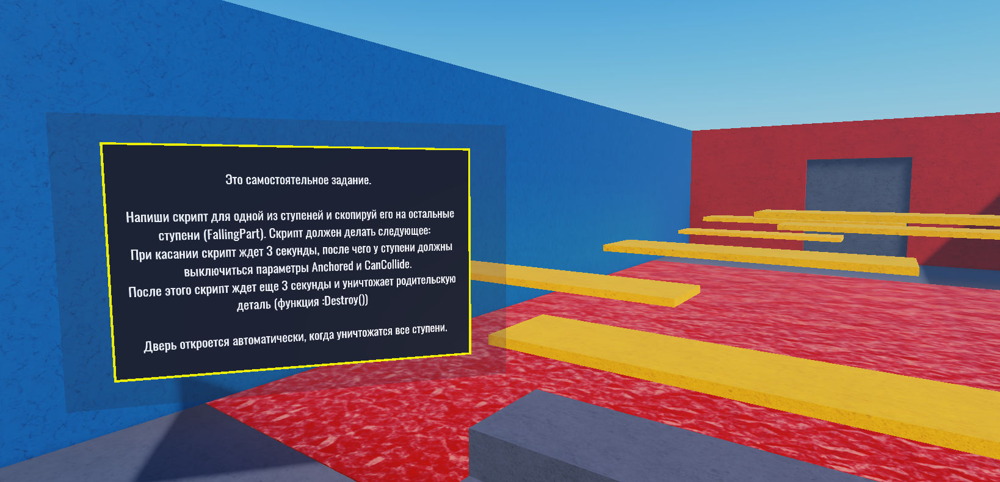Задание для самостоятельного выполнения дома. Используя знания, полученные на занятии, вам нужно написать скрипт, срабатывающий при касании платформы.
Скрипт должен работать следующим образом:
После касания платформа должна подождать 3 секунды, после чего начать падать вниз (отключить параметры Anchored и CanCollide), затем подождать ещё 3 секунды и самоуничтожиться.
Решение задачи:
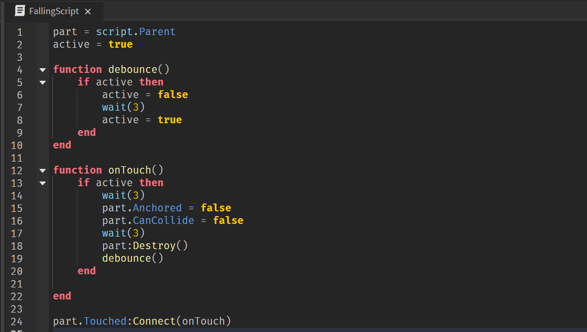